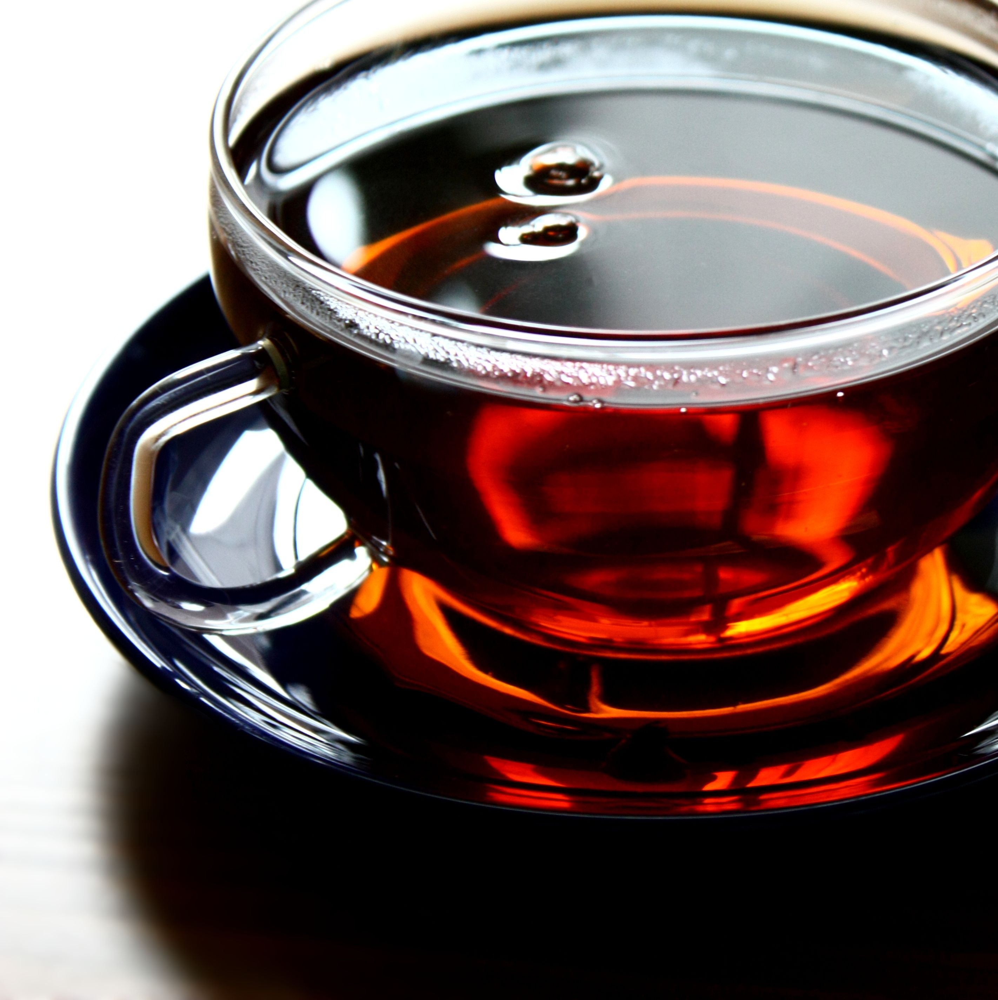

COFFEE |Back to top |
||
| Latte | Macchiato | Americano |
|---|---|---|
A latte is a coffee drink made with espresso and steamed milk. The term as used in English is a shortened form of the Italian caffè e latte, caffelatte or caffellatte, which means "milk coffee". |  Caffè macchiato, sometimes called espresso macchiato, is an espresso coffee drink with a small amount of milk, usually foamed. | Caffè Americano is a type of coffee drink prepared by diluting an espresso with hot water, giving it a similar strength to, but different flavor from, traditionally brewed coffee. |
TEA |Back to top |
||
| Green Tea | Black Tea | Yellow |
|---|---|---|
 Green tea is a type of tea that is made from Camellia sinensis leaves and buds that have not undergone the same withering and oxidation process used to make oolong teas and black teas. |  Black tea is a type of tea that is more oxidized than oolong, green, and white teas. Black tea is generally stronger in flavour than the less oxidized teas. | Yellow tea is oxidize at a slow rate for a brief period before the tea is heated fully to denature the oxidizing enzymes, producing a far more mellow taste than is found in most green teas |
SHAKE |Back to top |
||
| Cookies and Cream Milkshake | Chocolate Milkshake | Strawberry Milkshake |
|---|---|---|
 Cookies and cream (or cookies 'n cream) is a variety of ice cream and milkshake based on flavoring from chocolate sandwich cookies. |  This rich chocolate-based beverage is made and packed with ice cream and milk and delivers a stone-cold, divine aroma that it relishes with other desserts. |  Strawberry is a variety of ice cream and milkshake based on flavoring of the strawberry fruit. |